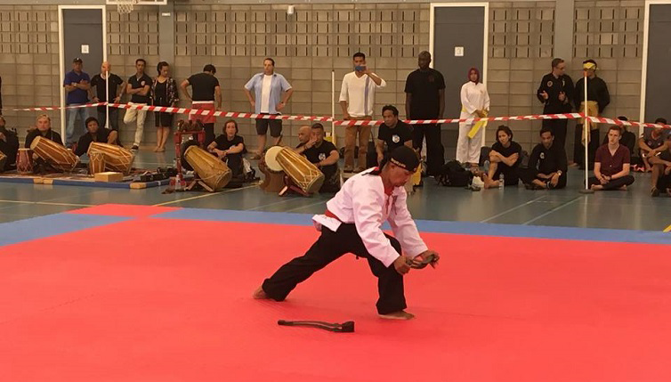

Pencak Silat Dutch Open 2016
The first Dutch Open Championships hosted by the Netherlands Pencak Silat Federation was held in Roermond, The Netherlands, on 27 & 28 August this year, at the Herteym Sports Hall.
More than 70 competitors took part from 6 countries: Germany, Indonesia, Malaysia, The Netherlands, Singapore & the United Kingdom, competing in both Tanding & Seni categories.
Organisers & Hosts
Netherlands Pencak Silat Federation (NPSF)
Sanctioned by International Pencak Silat Federation (PERSILAT)
Heads of delegations
European Pencak Silat Federation: Mr Aidinal Alrashid - EPSF President
Asia Pencak Silat Federation (APSF): Mr Sheik Alau'ddin Yacoob Marican - APSIF President
Persekutuan Silat Kebangsaan Malaysia (PESAKA): Mr. Dato Rosman Mat Deli - Vice President
Singapore Silat Federation (PERSISI): Sheik Alau'ddin Yacoob Marican - CEO
German Pencak Silat Federation (GPSF) : Mr Andre Mewis - President
Pencak Silat Federation UK (PSFUK): Miss Sue Gault - Secretary General
The Championships were opened by the Ambassadors to the Netherlands from Malaysia - H.E. Dato' Ahmad Nazri Yusof, & from Indonesia - H.E. I Gusti Agung Wesaka Puja, following a speech by the Secretary General of the NPSF, Robert Brandt.

The Opening Ceremony was followed by the start of the Junior & Senior Tanding competitions and the second day of the Championships focussed on Tanding Finals & Seni competitions. Particularly exciting finals took place between Malaysia's Nurul Ain & Singapore's Nurul Suhaila Mohd Saiful in Tanding Female Class D,

and in Male class E between Malaysia's Male Mohd Al Jufferi Jamari & Gusti Irvanda of Indonesia.

Following the Tanding Finals, the Seni competitions began, which included spectacular performances, especially the Ganda by Mohd Taqiyuddin Hamid & Rosli Mohd Shari of PESAKA, & the Male Tunggal by Amzad Samudro of Indonesia, as well as an impressive Female Tunggal performance by Samantha v. Roosenbeek of the Netherlands.

Following the Artistic competitions there were Seni performances from pesilat from the Indonesian & the Malaysian teams, & some amazing performances by Silat masters.

Gold, Silver & Bronze Cups were awarded for each competition category, as well the awards for best Female athlete, best Male athlete, & the best team. Singapore's Nurul Suhaila Mohd Saiful won best Female Athlete, & Malaysia's Mohd Al Jufferi Jamari won best Male athlete.

The Best Team award was won by the team from Malaysia.